Review the small-business loan memo document in my documents folder against the underwriting rules script in the same folder: open the script in VS Code, read the four thresholds it checks, and add a Writer comment on each applicant row that breaks one, naming the rule. Then email the verdict list to Dana Kovac at Meridian Credit Union.
THINKINGLet me start by understanding the task. I need to:
1. Review a small-business loan memo document (already open in LibreOffice Writer - loan_memo.odt)
2. Find the underwriting rules script in the same folder (documents folder)
3. Open the script in VS Code
4. Read the four thresholds it checks
5. Add a Writer comment on each applicant row that breaks a rule, naming the rule
6. Email the verdict list to Dana Kovac at Meridian Credit Union
Let me first read the document carefully. The memo shows:
- Applicant | Requested | DSCR | Credit Score | LTV % | Years Trading
- Harbor Point Bakery | 48000 | 1.42 | 712 | 61 | 6
- Vance Auto Electric | 120000 | 1.08 | 688 | 74 | 4
- Sable Ridge Landscaping | 75000 | 1.31 | 641 | 68 | 9
- Kessler Dental Studio | 210000 | 1.55 | 745 | 59 | 12
- Ortega Freight Lines | 165000 | 1.19 | 703 | 82 | 5
- Lumen Print Works | 32000 | 1.61 | 729 | 47 | 2
- Bramble & Fern Florists | 54000 | 1.24 | 698 | 63 | 7
Now I need to find the underwriting rules script. Let me open a file manager or terminal to find the documents folder and the script. Let me take a screenshot first to see the current state.
Actually, the document is already open. Let me first find the documents folder and the script. I'll use a terminal to explore the file system.
Let me take a screenshot first.
ACTIONI'll start by taking a screenshot to see the current state of the screen.
THINKINGLet me first understand the document content. The memo is open. Let me note the applicant data:
- Harbor Point Bakery | 48000 | 1.42 | 712 | 61 | 6
- Vance Auto Electric | 120000 | 1.08 | 688 | 74 | 4
- Sable Ridge Landscaping | 75000 | 1.31 | 641 | 68 | 9
- Kessler Dental Studio | 210000 | 1.55 | 745 | 59 | 12
- Ortega Freight Lines | 165000 | 1.19 | 703 | 82 | 5
- Lumen Print Works | 32000 | 1.61 | 729 | 47 | 2
- Bramble & Fern Florists | 54000 | 1.24 | 698 | 63 | 7
Now I need to find the underwriting rules script. Let me open a terminal to explore the documents folder. Let me find the file manager or terminal.
I see there's a terminal icon in the left sidebar. Let me click on it to open a terminal. Actually, let me use the terminal application to find the files.
Let me open the terminal. I see a terminal icon in the taskbar on the left (the dark square icon at around y=402 or y=447). Let me look more carefully. There's an icon at (23, 402) that looks like a terminal, and (23, 447) that looks like a file manager.
Let me click on the terminal icon. Actually, let me look at the icons:
- (23, 402) - looks like a dark terminal icon
- (23, 447) - looks like a file manager
Let me open a terminal to explore.
ACTIONThe loan memo is open. Let me note the applicant data, then find the underwriting rules script. Let me open a terminal to explore the documents folder.
EXECUTED (pyautogui in VM)pyautogui.click(32, 601)
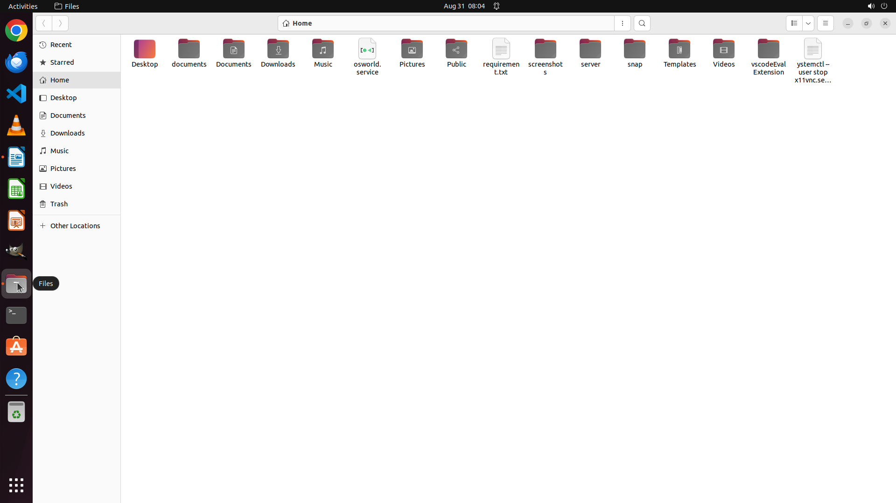
step 3 00:04:55
THINKINGI opened the Files application instead of a terminal. I can see there are two documents folders: "documents" and "Documents". Let me check both. The task says "my documents folder". Let me click on "Documents" first (the capitalized one is standard).
Actually, there are two: "documents" (lowercase) and "Documents" (capitalized). Let me check both. Let me first click on "Documents".
ACTIONThe Files app opened. I see both "documents" and "Documents" folders. Let me check the "Documents" folder first.
EXECUTED (pyautogui in VM)pyautogui.doubleClick(501, 110)
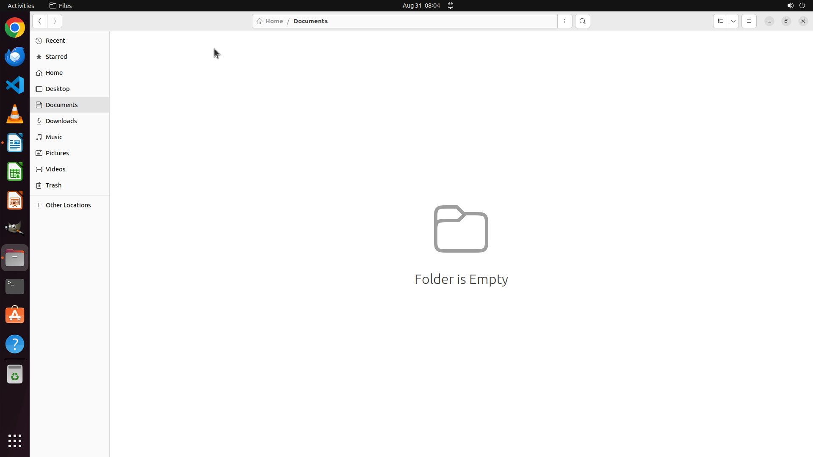
step 4 00:05:04
THINKINGThe "Documents" folder is empty. So the files must be in the "documents" (lowercase) folder. Let me go back to Home and check the "documents" folder.
ACTIONThe "Documents" folder is empty. Let me go back and check the "documents" (lowercase) folder.
EXECUTED (pyautogui in VM)pyautogui.doubleClick(403, 110)
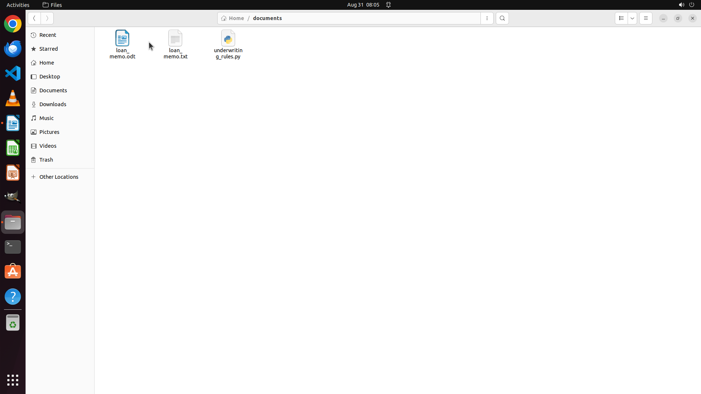
step 6 00:05:25
THINKINGNow I can see the documents folder contains:
- loan_memo.odt (the memo, already open in Writer)
- loan_memo.txt (a text version)
- underwriting_rules.py (the script)
I need to open the underwriting_rules.py script in VS Code. Let me first read it. I could open it in VS Code, but it might be easier to read it in a terminal first to understand the thresholds. However, the task says "open the script in VS Code, read the four thresholds it checks". So I should open it in VS Code as instructed.
Let me open it in VS Code. I can right-click on it and select "Open With" > "VS Code", or I could open VS Code and open the file. Let me right-click on the file.
Actually, let me first read the script content so I understand what I'm looking at. Let me open a terminal to read it quickly, but the task specifically wants me to open it in VS Code. Let me open it in VS Code.
Let me right-click on underwriting_rules.py.
ACTIONThe documents folder contains `loan_memo.odt`, `loan_memo.txt`, and `underwriting_rules.py`. Let me open the Python script in VS Code. I'll right-click on it.
EXECUTED (pyautogui in VM)pyautogui.rightClick(624, 110)
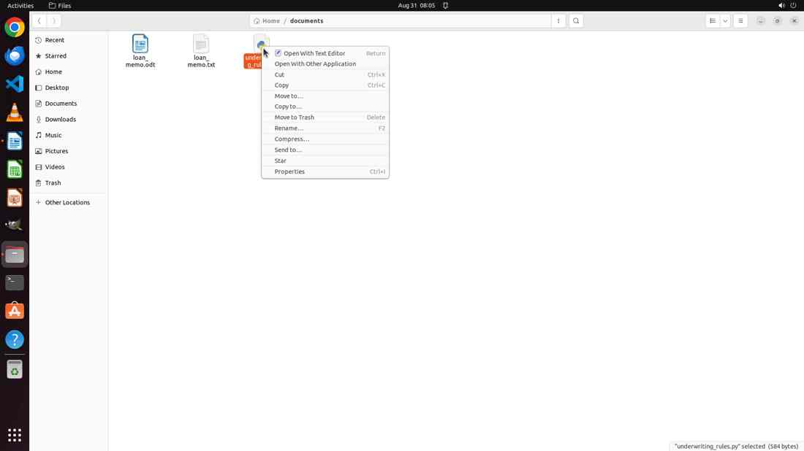
step 7 00:05:33
THINKINGThere's a context menu. I don't see "Open with VS Code" directly, but there's "Open With Other Application". Let me click on that to find VS Code.
ACTIONLet me click "Open With Other Application" to find VS Code.
THINKINGNow I can see the underwriting_rules.py script. Let me read it carefully:
```python
#!/usr/bin/env python3
"""Meridian Credit Union - Q3 underwriting screen."""
MIN_DSCR = 1.20
MIN_CREDIT_SCORE = 660
MAX_LTV_PERCENT = 75
MIN_YEARS_TRADING = 3
def screen(applicant):
fails = []
if applicant['dscr'] < MIN_DSCR:
fails.append('DSCR below 1.20')
if applicant['credit_score'] < MIN_CREDIT_SCORE:
fails.append('Credit score below 660')
if applicant['ltv_percent'] > MAX_LTV_PERCENT:
fails.append('LTV above 75%')
if applicant['years_trading'] < MIN_YEARS_TRADING:
fails.append('Years trading below 3')
return fails
```
So the four thresholds/rules are:
1. DSCR below 1.20 (MIN_DSCR = 1.20) - fail if dscr < 1.20
2. Credit score below 660 (MIN_CREDIT_SCORE = 660) - fail if credit_score < 660
3. LTV above 75% (MAX_LTV_PERCENT = 75) - fail if ltv_percent > 75
4. Years trading below 3 (MIN_YEARS_TRADING = 3) - fail if years_trading < 3
Now let me apply these rules to the applicant data from the memo:
Applicant | Requested | DSCR | Credit Score | LTV % | Years Trading
1. Harbor Point Bakery | 48000 | 1.42 | 712 | 61 | 6
- DSCR 1.42 >= 1.20 ✓
- Credit 712 >= 660 ✓
- LTV 61 <= 75 ✓
- Years 6 >= 3 ✓
→ PASS (no fails)
2. Vance Auto Electric | 120000 | 1.08 | 688 | 74 | 4
- DSCR 1.08 < 1.20 ✗ FAIL (DSCR below 1.20)
- Credit 688 >= 660 ✓
- LTV 74 <= 75 ✓
- Years 4 >= 3 ✓
→ FAIL: DSCR below 1.20
3. Sable Ridge Landscaping | 75000 | 1.31 | 641 | 68 | 9
- DSCR 1.31 >= 1.20 ✓
- Credit 641 < 660 ✗ FAIL (Credit score below 660)
- LTV 68 <= 75 ✓
- Years 9 >= 3 ✓
→ FAIL: Credit score below 660
4. Kessler Dental Studio | 210000 | 1.55 | 745 | 59 | 12
- DSCR 1.55 >= 1.20 ✓
- Credit 745 >= 660 ✓
- LTV 59 <= 75 ✓
- Years 12 >= 3 ✓
→ PASS (no fails)
5. Ortega Freight Lines | 165000 | 1.19 | 703 | 82 | 5
- DSCR 1.19 < 1.20 ✗ FAIL (DSCR below 1.20)
- Credit 703 >= 660 ✓
- LTV 82 > 75 ✗ FAIL (LTV above 75%)
- Years 5 >= 3 ✓
→ FAIL: DSCR below 1.20, LTV above 75%
6. Lumen Print Works | 32000 | 1.61 | 729 | 47 | 2
- DSCR 1.61 >= 1.20 ✓
- Credit 729 >= 660 ✓
- LTV 47 <= 75 ✓
- Years 2 < 3 ✗ FAIL (Years trading below 3)
→ FAIL: Years trading below 3
7. Bramble & Fern Florists | 54000 | 1.24 | 698 | 63 | 7
- DSCR 1.24 >= 1.20 ✓
- Credit 698 >= 660 ✓
- LTV 63 <= 75 ✓
- Years 7 >= 3 ✓
→ PASS (no fails)
Wait, let me double check some of these by reading the values carefully from the screenshot. Let me re-read the memo values. Actually I should re-verify the memo values by looking at the memo more carefully, since I need to be accurate. Let me zoom in on the memo later. But first, let me make sure I read the script correctly.
Let me re-read the script. The values:
- MIN_DSCR = 1.20
- MIN_CREDIT_SCORE = 660
- MAX_LTV_PERCENT = 75
- MIN_YEARS_TRADING = 3
Rules (fail conditions):
1. DSCR < 1.20 → 'DSCR below 1.20'
2. Credit score < 660 → 'Credit score below 660'
3. LTV > 75 → 'LTV above 75%'
4. Years trading < 3 → 'Years trading below 3'
Note the boundary conditions:
- DSCR: fail if strictly less than 1.20. So DSCR = 1.20 passes.
- Credit: fail if strictly less than 660. So 660 passes.
- LTV: fail if strictly greater than 75. So LTV = 75 passes.
- Years: fail if strictly less than 3. So Years = 3 passes.
Now let me re-examine the applicant data. But I need to be careful and accurate about the values. Let me verify the memo values by re-reading. From the first screenshot:
- Harbor Point Bakery | 48000 | 1.42 | 712 | 61 | 6
- Vance Auto Electric | 120000 | 1.08 | 688 | 74 | 4
- Sable Ridge Landscaping | 75000 | 1.31 | 641 | 68 | 9
- Kessler Dental Studio | 210000 | 1.55 | 745 | 59 | 12
- Ortega Freight Lines | 165000 | 1.19 | 703 | 82 | 5
- Lumen Print Works | 32000 | 1.61 | 729 | 47 | 2
- Bramble & Fern Florists | 54000 | 1.24 | 698 | 63 | 7
Let me verify these against the rules again:
1. Harbor Point Bakery: DSCR 1.42 (ok), Credit 712 (ok), LTV 61 (ok), Years 6 (ok) → PASS
2. Vance Auto Electric: DSCR 1.08 (FAIL <1.20), Credit 688 (ok), LTV 74 (ok), Years 4 (ok) → FAIL: DSCR below 1.20
3. Sable Ridge Landscaping: DSCR 1.31 (ok), Credit 641 (FAIL <660), LTV 68 (ok), Years 9 (ok) → FAIL: Credit score below 660
4. Kessler Dental Studio: DSCR 1.55 (ok), Credit 745 (ok), LTV 59 (ok), Years 12 (ok) → PASS
5. Ortega Freight Lines: DSCR 1.19 (FAIL <1.20), Credit 703 (ok), LTV 82 (FAIL >75), Years 5 (ok) → FAIL: DSCR below 1.20, LTV above 75%
6. Lumen Print Works: DSCR 1.61 (ok), Credit 729 (ok), LTV 47 (ok), Years 2 (FAIL <3) → FAIL: Years trading below 3
7. Bramble & Fern Florists: DSCR 1.24 (ok), Credit 698 (ok), LTV 63 (ok), Years 7 (ok) → PASS
So the failing applicants:
- Vance Auto Electric: DSCR below 1.20
- Sable Ridge Landscaping: Credit score below 660
- Ortega Freight Lines: DSCR below 1.20, LTV above 75%
- Lumen Print Works: Years trading below 3
The passing applicants:
- Harbor Point Bakery
- Kessler Dental Studio
- Bramble & Fern Florists
So I need to add a Writer comment on each applicant row that breaks one (i.e., the 4 failing rows), naming the rule.
Wait, but I should double-check the memo values carefully. The values are small text. Let me re-verify by reading the .txt file, which would be clearer. Actually, let me read the loan_memo.txt to be sure of the values, since that's a plain text file that's more reliable to read. Let me open it in a terminal or in VS Code.
Actually, I could read the txt file in VS Code right now since it's in the same folder. Let me open it via VS Code. Or I could just carefully re-examine the memo in Writer by zooming in.
Let me be thorough. Let me open the txt file in VS Code to verify the values. Actually, let me use the terminal to cat both files to be 100% sure of the values. But wait, I've been instructed to open the script in VS Code which I did. Let me verify the memo values by reading the txt.
Actually, let me just verify the memo values by reading loan_memo.txt in VS Code. Let me open it. I'll use File > Open or the command palette.
Actually, a cleaner approach: let me use the terminal in VS Code (or a separate terminal) to cat both files. But first, let me dismiss the Python extension install dialog.
Let me first dismiss the "Do you want to install the recommended Python extension" dialog by clicking the X.
Actually, it doesn't matter much. Let me read the values from the txt file to be certain. Let me open the txt file in VS Code. I'll use the terminal to cat it, which is fastest and most reliable.
Let me open a terminal. In VS Code, I can go to Terminal > New Terminal. But actually, using the system terminal might be easier. Let me use VS Code's integrated terminal.
Actually, let me be efficient. Let me first confirm the script values which I've read clearly. Then let me verify the memo data by reading the txt file. Let me open the terminal in VS Code.
Actually, let me just carefully re-read the memo in Writer by zooming. But the txt is more reliable. Let me open the integrated terminal in VS Code to cat the txt file.
Let me click Terminal menu.
Actually, before that, let me note down the script rules precisely since I've read them. Let me zoom in to make sure I have the exact wording. The script shows:
- fails.append('DSCR below 1.20')
- fails.append('Credit score below 660')
- fails.append('LTV above 75%')
- fails.append('Years trading below 3')
These are the rule names I should use in the comments.
Now let me verify the memo data. Let me open the txt file. I'll use the terminal. Let me click on Terminal menu in VS Code.
ACTIONI can now read the underwriting rules script clearly. Let me note the four thresholds:
- `MIN_DSCR = 1.20` → fail if DSCR below 1.20
- `MIN_CREDIT_SCORE = 660` → fail if Credit score below 660
- `MAX_LTV_PERCENT = 75` → fail if LTV above 75%
- `MIN_YEARS_TRADING = 3` → fail if Years trading below 3
Let me verify the memo values by reading the txt version. Let me open a terminal in VS Code to be precise about the data.
EXECUTED (pyautogui in VM)pyautogui.press("return")
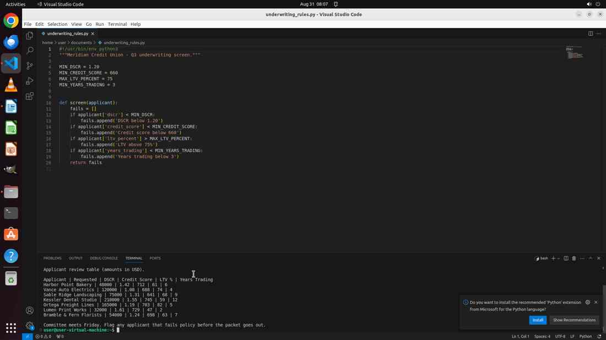
step 16 00:08:36
THINKINGNow I can read the txt file content clearly:
```
Applicant review table (amounts in USD).
Applicant | Requested | DSCR | Credit Score | LTV % | Years Trading
Harbor Point Bakery | 48000 | 1.42 | 712 | 61 | 6
Vance Auto Electric | 120000 | 1.08 | 688 | 74 | 4
Sable Ridge Landscaping | 75000 | 1.31 | 641 | 68 | 9
Kessler Dental Studio | 210000 | 1.55 | 745 | 59 | 12
Ortega Freight Lines | 165000 | 1.19 | 703 | 82 | 5
Lumen Print Works | 32000 | 1.61 | 729 | 47 | 2
Bramble & Fern Florists | 54000 | 1.24 | 698 | 63 | 7
Committee meets Friday. Flag any applicant that fails policy before the packet goes out.
```
This confirms the values. Let me verify my analysis:
Rules:
1. DSCR < 1.20 → FAIL 'DSCR below 1.20'
2. Credit score < 660 → FAIL 'Credit score below 660'
3. LTV > 75 → FAIL 'LTV above 75%'
4. Years trading < 3 → FAIL 'Years trading below 3'
Applicants:
1. Harbor Point Bakery: DSCR 1.42 (ok), Credit 712 (ok), LTV 61 (ok), Years 6 (ok) → PASS
2. Vance Auto Electric: DSCR 1.08 (FAIL), Credit 688 (ok), LTV 74 (ok), Years 4 (ok) → FAIL: DSCR below 1.20
3. Sable Ridge Landscaping: DSCR 1.31 (ok), Credit 641 (FAIL), LTV 68 (ok), Years 9 (ok) → FAIL: Credit score below 660
4. Kessler Dental Studio: DSCR 1.55 (ok), Credit 745 (ok), LTV 59 (ok), Years 12 (ok) → PASS
5. Ortega Freight Lines: DSCR 1.19 (FAIL), Credit 703 (ok), LTV 82 (FAIL), Years 5 (ok) → FAIL: DSCR below 1.20 AND LTV above 75%
6. Lumen Print Works: DSCR 1.61 (ok), Credit 729 (ok), LTV 47 (ok), Years 2 (FAIL) → FAIL: Years trading below 3
7. Bramble & Fern Florists: DSCR 1.24 (ok), Credit 698 (ok), LTV 63 (ok), Years 7 (ok) → PASS
So the failing applicants are:
- Vance Auto Electric: DSCR below 1.20
- Sable Ridge Landscaping: Credit score below 660
- Ortega Freight Lines: DSCR below 1.20; LTV above 75%
- Lumen Print Works: Years trading below 3
Passing applicants:
- Harbor Point Bakery
- Kessler Dental Studio
- Bramble & Fern Florists
Now I need to:
1. Add a Writer comment on each applicant row that breaks a rule (4 rows), naming the rule.
2. Email the verdict list to Dana Kovac at Meridian Credit Union.
Wait, let me double-check the Ortega Freight Lines values. DSCR 1.19, LTV 82. Yes, both fail.
- DSCR 1.19 < 1.20 → FAIL
- LTV 82 > 75 → FAIL
So Ortega has two violations.
Let me be careful with Vance Auto Electric. DSCR 1.08 < 1.20 → FAIL. Credit 688 >= 660 ok. LTV 74 <= 75 ok. Years 4 >= 3 ok. So only DSCR fails. Good.
Let me be careful with Sable Ridge Landscaping. Credit 641 < 660 → FAIL. DSCR 1.31 ok. LTV 68 ok. Years 9 ok. So only credit score fails. Good.
Lumen Print Works: Years 2 < 3 → FAIL. DSCR 1.61 ok. Credit 729 ok. LTV 47 ok. So only years trading fails. Good.
So the verdict list is:
- Harbor Point Bakery: PASS
- Vance Auto Electric: FAIL - DSCR below 1.20
- Sable Ridge Landscaping: FAIL - Credit score below 660
- Kessler Dental Studio: PASS
- Ortega Freight Lines: FAIL - DSCR below 1.20; LTV above 75%
- Lumen Print Works: FAIL - Years trading below 3
- Bramble & Fern Florists: PASS
Now, I need to add a comment in LibreOffice Writer on each of the 4 failing applicant rows, naming the rule.
Let me first make sure I understand what "Writer comment" means - it's an annotation. In LibreOffice Writer, I can insert a comment via Insert > Comment, or Ctrl+Alt+C.
Let me now switch to LibreOffice Writer. The Writer window should still be open with loan_memo.odt.
Actually, before that, let me reconsider. The task says "add a Writer comment on each applicant row that breaks one, naming the rule." So I add a comment anchored to each of the 4 failing rows.
Let me plan the comments:
- Vance Auto Electric row: "Fails: DSCR below 1.20 (DSCR 1.08)"
- Sable Ridge Landscaping row: "Fails: Credit score below 660 (score 641)"
- Ortega Freight Lines row: "Fails: DSCR below 1.20 (1.19); LTV above 75% (82%)"
- Lumen Print Works row: "Fails: Years trading below 3 (2 years)"
Now, let me switch to LibreOffice Writer. I need to find it. The Writer window is behind. Let me use the Activities or the taskbar. Actually, in the first screenshot, Writer was open. Let me switch to it.
Actually, I need to be careful about how I add the comment. To add a comment anchored to a specific row, I should:
1. Click on the text of that row (or select the applicant name).
2. Insert a comment.
3. Type the comment text.
4. Confirm.
Let me first switch to the Writer window. I'll use the Activities overview or click on the Writer icon in the taskbar (the LibreOffice Writer icon at position around (23, 224)).
Actually, in the current screenshot, the left taskbar shows various app icons. The LibreOffice Writer icon is at around (23, 224) - it's the blue document icon. Let me click on it.
Wait, but clicking the icon might open a new window or the app. Let me think. Actually, since Writer is already open, clicking its taskbar icon should bring it to focus. But this is a GNOME desktop, so the taskbar (dock) on the left shows running apps. Let me look at the icons:
- (23, 43) Chrome
- (23, 89) some blue app
- (23, 133) VS Code
- (23, 178) LibreOffice Impress (orange)
- (23, 224) LibreOffice Writer (blue document)
- (23, 269) LibreOffice Calc (green)
- (23, 315) LibreOffice something (orange/red)
- (23, 358) GIMP
- (23, 404) Files
- (23, 448) Terminal
- (23, 493) App store
- (23, 538) Help
- (23, 586) Settings/recycle
Hmm, wait. Let me reconsider. Actually, the blue document icon at (23, 224) is LibreOffice Writer. But I'm not 100% sure it's the running instance. Let me use the Activities overview to see all windows.
Actually, the simplest is to click on the Writer taskbar icon. Let me do that.
Actually, I realize I should be more careful. Let me use the "Activities" in the top-left to see all open windows, then click on the Writer window. Or I can just click the Writer icon in the dock.
Let me click the Writer icon at (23, 224).
Wait, actually, I want to make sure the Writer window is the loan_memo.odt document. It was open in the first screenshot. Let me switch to it.
Let me click on the LibreOffice Writer icon in the dock.
ACTIONThe data is confirmed. Let me analyze against the four rules:
| Applicant | DSCR | Credit | LTV | Years | Verdict |
|---|---|---|---|---|---|
| Harbor Point Bakery | 1.42 | 712 | 61 | 6 | PASS |
| Vance Auto Electric | **1.08** | 688 | 74 | 4 | FAIL: DSCR below 1.20 |
| Sable Ridge Landscaping | 1.31 | **641** | 68 | 9 | FAIL: Credit score below 660 |
| Kessler Dental Studio | 1.55 | 745 | 59 | 12 | PASS |
| Ortega Freight Lines | **1.19** | 703 | **82** | 5 | FAIL: DSCR below 1.20 + LTV above 75% |
| Lumen Print Works | 1.61 | 729 | 47 | **2** | FAIL: Years trading below 3 |
| Bramble & Fern Florists | 1.24 | 698 | 63 | 7 | PASS |
Now let me switch to LibreOffice Writer to add comments. Let me click the Writer icon in the dock.
EXECUTED (pyautogui in VM)pyautogui.click(32, 334)
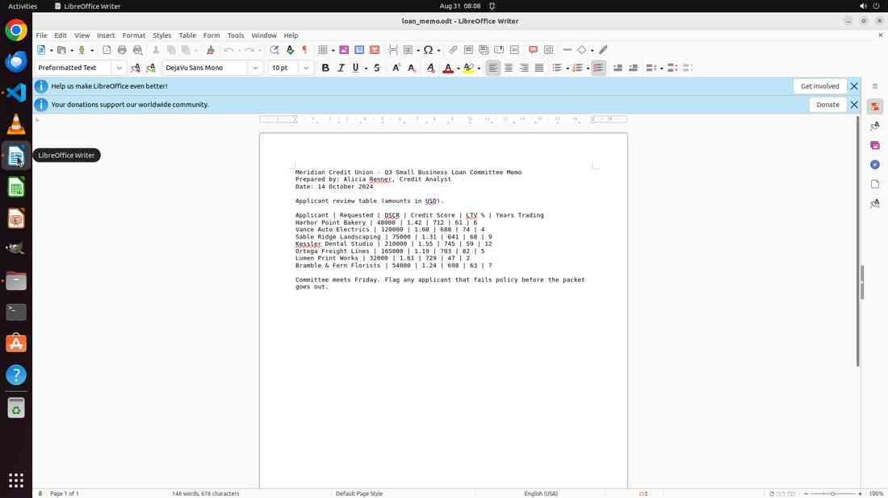
step 17 00:08:55
THINKINGNow I'm in LibreOffice Writer with the loan memo open. I can see the document. The applicant rows are:
- Line: "Harbor Point Bakery | 48000 | 1.42 | 712 | 61 | 6" at y≈320
- "Vance Auto Electric | 120000 | 1.08 | 688 | 74 | 4" at y≈331
- "Sable Ridge Landscaping | 75000 | 1.31 | 641 | 68 | 9" at y≈342
- "Kessler Dental Studio | 210000 | 1.55 | 745 | 59 | 12" at y≈353
- "Ortega Freight Lines | 165000 | 1.19 | 703 | 82 | 5" at y≈363
- "Lumen Print Works | 32000 | 1.61 | 729 | 47 | 2" at y≈374
- "Bramble & Fern Florists | 54000 | 1.24 | 698 | 63 | 7" at y≈384
First, let me close the notification bars ("Help us make LibreOffice even better!" and "Your donations support...") to have more space. Let me click the X on both.
Actually, they don't obstruct the document much. But let me close them anyway for cleanliness. Let me click the X at (1231, 124) and (1231, 151).
Actually, let me first close those notification bars.
ACTIONI'm now in LibreOffice Writer with the loan memo. Let me first close the notification bars to have a cleaner workspace.
EXECUTED (pyautogui in VM)pyautogui.click(1845, 184)
step 19.1 00:09:49
THINKINGBoth notification bars are closed. Now I can see the document clearly. The applicant rows:
- Header: "Applicant | Requested | DSCR | Credit Score | LTV % | Years Trading" at y≈257
- "Harbor Point Bakery | 48000 | 1.42 | 712 | 61 | 6" at y≈268
- "Vance Auto Electric | 120000 | 1.08 | 688 | 74 | 4" at y≈278
- "Sable Ridge Landscaping | 75000 | 1.31 | 641 | 68 | 9" at y≈288
- "Kessler Dental Studio | 210000 | 1.55 | 745 | 59 | 12" at y≈299
- "Ortega Freight Lines | 165000 | 1.19 | 703 | 82 | 5" at y≈309
- "Lumen Print Works | 32000 | 1.61 | 729 | 47 | 2" at y≈319
- "Bramble & Fern Florists | 54000 | 1.24 | 698 | 63 | 7" at y≈330
Now I need to add a comment on each failing row. The best approach:
1. Click somewhere in the Vance Auto Electric row (or select the applicant name).
2. Insert a comment (Ctrl+Alt+C or Insert > Comment).
3. Type the comment.
4. Close the comment.
5. Repeat for each.
To anchor the comment to the row, I should select the applicant name text on that row, so the comment is anchored to that specific text. That makes it clear which row the comment is for.
Let me think about the best way to select the applicant name. I could triple-click to select the whole line, or double-click to select a word. Actually, for a comment, selecting the applicant's name would be ideal so the comment marker is visible on that row.
Let me start with Vance Auto Electric. I'll double-click on "Vance" to select it, then actually I want to select the whole name "Vance Auto Electric". Let me click at the start of "Vance" and drag to the end of "Electric". Or I can just click in the row and insert a comment - the comment will be anchored at the cursor position. But to make it clearly associated with the row, selecting the applicant name is better.
Actually, the simplest reliable approach: click on the applicant name to place the cursor there, then insert a comment. The comment will be anchored at that position. But anchoring to a single point is fine. However, selecting the name makes the association clearer and the comment marker will highlight the selected text.
Let me select the applicant name for each row. I'll click at the beginning of the name and shift-click at the end, or use a drag.
Let me start with Vance Auto Electric. The row is at y≈278. "Vance Auto Electric" starts at x≈425 and ends at x≈528. Let me click at the start (x≈424, y≈278) then shift-click at the end (x≈529, y≈278).
Actually, let me reconsider. A cleaner method to select a word precisely is to double-click a word, then extend selection. But selecting the entire applicant name via drag is fine.
Alternatively, I can place the cursor anywhere in the row and just insert a comment. The comment will be anchored at the cursor. When the comment is displayed in the margin, it will point to the row. That should be acceptable for "add a comment on each applicant row."
But to be safe and clear, let me select the applicant name. Let me do a click-drag from the start to the end of the name.
Let me start with Vance Auto Electric. I'll do left_click_drag from (425, 278) to (529, 278).
Actually, wait. Let me reconsider the exact positions. Looking at the screenshot:
- "Vance Auto Electric | 120000 | 1.08 | 688 | 74 | 4"
- "Vance" starts at x≈425, and "Electric" ends around x≈528.
Let me do the drag selection. Let me use left_click_drag.
Actually, I'm a bit concerned about the precision of drag selection. An alternative that's more reliable: double-click on the word "Vance" to select just that word, then it's easy to verify. But then the comment would only be anchored to "Vance", not the whole name. That's still fine for identifying the row.
Hmm, but actually, I think the cleanest is to just place the cursor in the row and insert a comment. Let me think about what "add a Writer comment on each applicant row" means - it means the comment should be on/anchored to that row. Anchoring anywhere in the row satisfies this.
But to be safe, let me select the applicant name so the association is unambiguous. Let me use click-drag.
Let me first zoom in a bit to make the text bigger and easier to click accurately. Actually, the text is readable. Let me just proceed.
Actually, let me reconsider. If I select text and insert a comment, the comment is anchored to the selected text. If I don't select anything and just place the cursor, the comment is anchored at that cursor position (zero-width). Both work. Let me select the name for clarity.
Let me start with Vance Auto Electric. I'll drag from (424, 278) to (529, 278).
Wait, I realize I should double check the row y-coordinates more carefully by looking at the screenshot. Let me look:
- y=257: "Applicant | Requested | DSCR | Credit Score | LTV % | Years Trading"
- y=268: "Harbor Point Bakery | 48000 | 1.42 | 712 | 61 | 6"
- y=278: "Vance Auto Electric | 120000 | 1.08 | 688 | 74 | 4"
- y=288: "Sable Ridge Landscaping | 75000 | 1.31 | 641 | 68 | 9"
- y=299: "Kessler Dental Studio | 210000 | 1.55 | 745 | 59 | 12"
- y=309: "Ortega Freight Lines | 165000 | 1.19 | 703 | 82 | 5"
- y=319: "Lumen Print Works | 32000 | 1.61 | 729 | 47 | 2"
- y=330: "Bramble & Fern Florists | 54000 | 1.24 | 698 | 63 | 7"
These are the rows. Good.
Let me start adding comments. I'll begin with Vance Auto Electric (y≈278).
Let me do the drag selection for "Vance Auto Electric". Start at (424, 278), end at (529, 278).
Actually, I want to be careful - let me select just by clicking at the start of "Vance" and using Home then shift+... no, that's complicated. Let me just do the drag.
Hmm, but actually there's a subtlety. If I select "Vance Auto Electric" and insert a comment, then I type the comment, the comment gets inserted. But I need to make sure the comment text I type goes into the comment box, not the document. When you insert a comment in LibreOffice, a comment frame appears in the margin and the cursor is automatically placed in the comment frame, so typing goes into the comment. Good.
Let me proceed. First, select "Vance Auto Electric".
Let me do left_click_drag.
Actually, I realize the drag might be imprecise. Let me instead click at the start of the word and then use keyboard to extend, OR just place cursor and insert comment.
You know what, let me keep it simple and robust: I'll click to place the cursor right after the applicant name in the row (or at a clear spot in the row), then insert a comment with Ctrl+Alt+C. The comment will be anchored there. This is reliable.
But actually, selecting the name is better for clarity. Let me try the drag approach and verify with a screenshot.
Let me do the drag for Vance Auto Electric.
ACTIONBoth notification bars are closed. Now I'll add comments on the four failing applicant rows. Let me start with **Vance Auto Electric** (fails DSCR below 1.20). I'll select the applicant name first so the comment is clearly anchored to that row.
EXECUTED (pyautogui in VM)pyautogui.moveTo(636, 416)
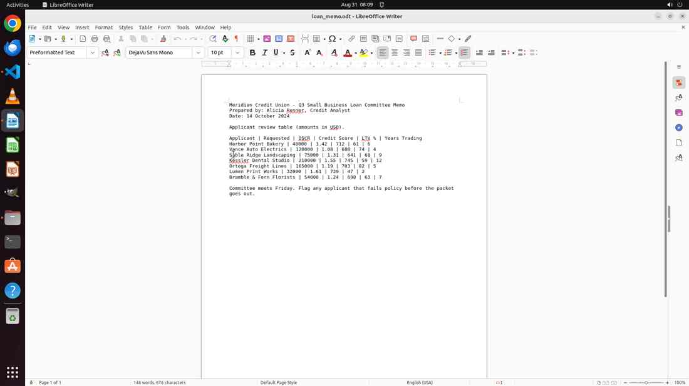
step 19.2 00:09:52
same model call as the previous action
EXECUTED (pyautogui in VM)pyautogui.dragTo(791, 416, duration=0.5)
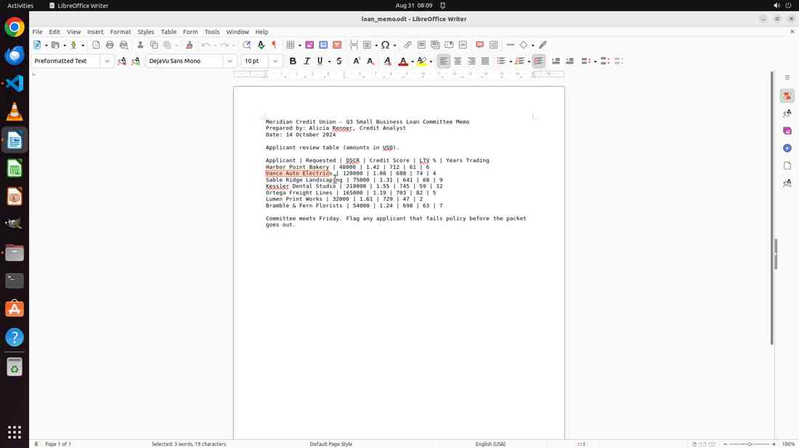
step 20 00:10:02
THINKINGI can see "Vance Auto Electric" is now selected (highlighted). The status bar shows "Selected: 3 words, 19 characters". Wait, "Vance Auto Electric" is 19 characters? V-a-n-c-e(5) space A-u-t-o(4) space E-l-e-c-t-r-i-c(8) = 5+1+4+1+8 = 19. Yes! So the selection is exactly "Vance Auto Electric".
Now let me insert a comment. I'll use Ctrl+Alt+C.
ACTION"Vance Auto Electric" is selected (19 characters confirmed). Now let me insert a comment using Ctrl+Alt+C.
EXECUTED (pyautogui in VM)pyautogui.hotkey("ctrl", "alt", "c")
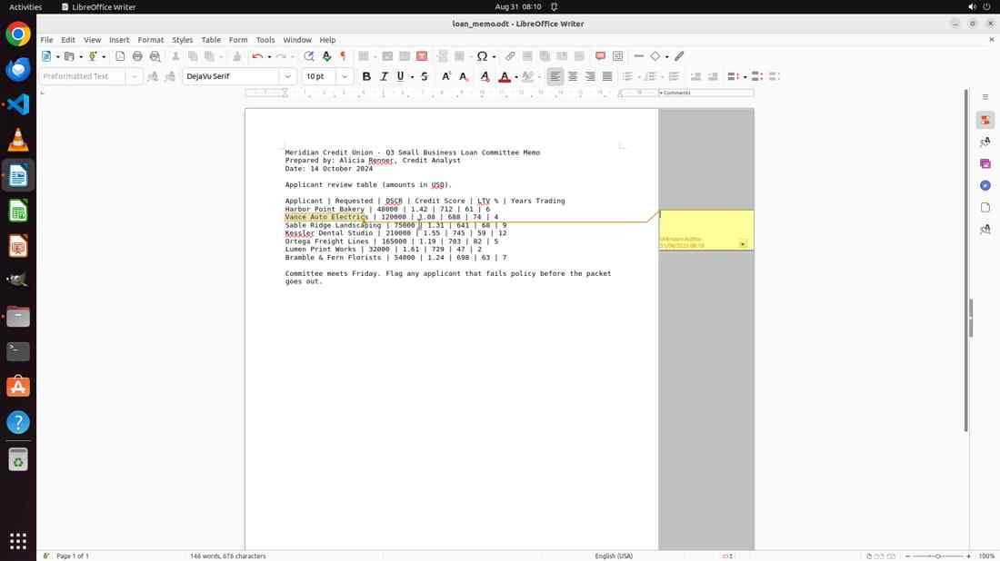
step 21 00:10:15
THINKINGA comment box appeared in the margin on the right side, anchored to "Vance Auto Electric" (which is highlighted/underlined). The comment box shows "Unknown Author" and the timestamp. The cursor should be in the comment box now. Let me type the comment text.
The comment box is at around (910, 310). The cursor should be in it. Let me type the comment.
For Vance Auto Electric, the failing rule is "DSCR below 1.20". Let me type a clear comment:
"Fails: DSCR below 1.20 (DSCR is 1.08)"
Actually, let me name the rule as it appears in the script: "DSCR below 1.20". Let me type:
"FAIL - DSCR below 1.20 (DSCR = 1.08)"
Let me type this. But first, let me make sure the cursor is in the comment box. It should be since the comment box appeared with a text cursor. Let me just type.
Actually, let me click in the comment box first to make sure. The comment box is the yellow area. Let me click in it at around (910, 320) to place the cursor there. Actually, the cursor is likely already there. Let me just type and see.
Let me type the comment.
ACTIONA comment box appeared in the margin, anchored to "Vance Auto Electric". The cursor should be in the comment box. Let me type the comment naming the rule.
TOOL CALL<tool_call>
<function=computer_use>
<parameter=action>
type
</parameter>
<parameter=text>
FAIL - DSCR below 1.20 (DSCR is 1.08)
</parameter>
</function>
</tool_call>
EXECUTED (pyautogui in VM)pyautogui.typewrite("FAIL - DSCR below 1.20 (DSCR is 1.08)")
step 22.1 00:10:28
THINKINGThe comment text "FAIL - DSCR below 1.20 (DSCR is 1.08)" is now in the comment box for Vance Auto Electric.
Now I need to move to the next failing row: Sable Ridge Landscaping (fails Credit score below 660).
First, I should click out of the comment box to finalize it, then select the Sable Ridge Landscaping name and insert a comment.
Let me click on the "Sable Ridge Landscaping" text to deselect the comment and place my cursor there. Actually, I'll do the selection directly.
Let me select "Sable Ridge Landscaping". The row is at y≈288. "Sable Ridge Landscaping" starts at x≈425 and ends at x≈557. Let me drag from (424, 288) to (558, 288).
Wait, but I need to first click out of the current comment box. If I click on the text in the document, it will deselect the comment and move the cursor to the document. Let me do the drag selection on Sable Ridge Landscaping.
Actually, let me be careful. The comment box is currently active. If I do a drag in the document, it should exit the comment and select the text. Let me try.
Let me drag-select "Sable Ridge Landscaping" from (424, 288) to (558, 288).
ACTIONThe comment for Vance Auto Electric is added. Now let me move to **Sable Ridge Landscaping** (fails Credit score below 660). Let me select its name by dragging.
EXECUTED (pyautogui in VM)pyautogui.moveTo(636, 431)
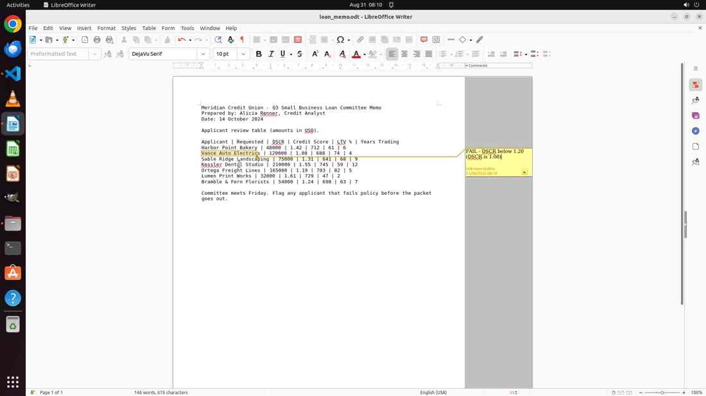
step 22.2 00:10:32
same model call as the previous action
EXECUTED (pyautogui in VM)pyautogui.dragTo(836, 431, duration=0.5)
step 23.1 00:11:19
THINKINGHmm, the status bar shows "Selected: 5 words, 25 characters". Let me check what's selected. The selection appears to span from "Sable Ridge" to "Landscaping | 75000 | 1" - it looks like I selected too much. Let me look at the highlighting.
Looking at the screenshot, the highlighted region (orange) appears to start at "Sable Ridge" and extends to around "1.31" area. Actually the selection looks like it goes from "Sable Ridge Landscaping | 75000 | 1.31" partially.
Wait, "5 words, 25 characters". "Sable Ridge Landscaping" is: Sable(5) space Ridge(5) space Landscaping(11) = 5+1+5+1+11 = 23 characters. So 25 characters would be more than just the name.
Hmm, my drag endpoint (558, 288) was too far to the right. The name "Sable Ridge Landscaping" ends before the pipe "| 75000". Let me look - "Landscaping" ends at around x=525 in the text "Sable Ridge Landscaping | 75000...".
Wait, let me re-examine. The row text is "Sable Ridge Landscaping | 75000 | 1.31 | 641 | 68 | 9".
- "Sable Ridge Landscaping" = 23 chars, from x≈425 to x≈548
- " | 75000"
So my drag to x=558 extended slightly past the name into the pipe/number area. The selection is "Sable Ridge Landscaping | 7" maybe? Let me count: "Sable Ridge Landscaping | 7" = 23 + " | 7" = 23+4 = 27. Hmm, not quite 25.
Actually "5 words, 25 characters". Words: Sable, Ridge, Landscaping, 75000, 1 = 5 words. Characters 25. Let me think: "Sable Ridge Landscaping | 7" would be 27 chars but 4 words (Sable Ridge Landscaping 7). Hmm.
Actually the character count includes spaces and the pipe. Let me not worry about the exact selection. The issue is that I may have selected a bit too much, extending into the "75000" number. That's not ideal but the comment will still be anchored to text on the Sable Ridge row, which is what matters. However, to be clean, let me re-select just the name.
Actually, let me reconsider. It might be cleaner to just select the whole row or just place the cursor. But the concern is the comment should be "on each applicant row". As long as the comment is anchored within the Sable Ridge Landscaping row, it's fine. Even if it extends slightly into "75000", it's still on that row.
But wait, I want to make sure the selection didn't spill into the next row. "5 words, 25 characters" - if it spilled to the next line it would include "Kessler" etc. But 25 chars is small, so it's all within the Sable Ridge row. It selected "Sable Ridge Landscaping | 7" or similar. That's fine - it's on the correct row.
Actually, let me be more precise and re-do the selection to be clean. Let me select just "Sable Ridge Landscaping". Let me double-click on "Sable" first to see, then extend. Actually, that's more steps.
Alternatively, I could just proceed - the comment is anchored to text on the Sable Ridge row. That satisfies "add a comment on each applicant row". Let me just insert the comment now. The anchor text includes the name and a bit of the number, but it's clearly on the Sable Ridge row.
Hmm, but for cleanliness, having the comment anchored to "Sable Ridge Landscaping | 7" looks a little sloppy. Let me re-select more precisely.
Actually, you know what, it's fine. The important thing is the comment is on the correct row and names the rule. Let me just insert the comment. But let me reconsider - maybe I should select a cleaner range.
Let me re-do the selection to be precise. Let me click just before "Sable" and shift-click just after "Landscaping".
Actually, the current selection includes the name, which is the key part. The slight overflow into "7" (part of 75000) is minor. But to be safe and clean, let me redo it.
Let me reselect. I'll click at the very start of "Sable" (x≈424) and shift+click at the end of "Landscaping" (x≈547).
Actually, I'll just proceed with the current selection since it clearly includes the applicant name and is on the correct row. The comment anchor is what matters. Let me insert the comment.
Hmm, but actually, let me reconsider whether the overflow could be a problem. If the selection is "Sable Ridge Landscaping | 7" and I anchor a comment to it, the comment will appear associated with that text on the Sable Ridge row. That's fine. Let me proceed.
Wait, I realize I should double-check by looking at where the highlight ends. In the screenshot, the orange highlight seems to end around x=558 which is past "Landscaping". Let me look again... "Sable Ridge Landscaping" - the "p" at the end. Then " | 75000". The highlight appears to cover "Sable Ridge Landscaping | 7" roughly.
OK here's my decision: The selection includes the full applicant name plus a tiny bit. This is acceptable and on the correct row. Let me insert the comment. If it looks bad, I can fix later.
Actually, let me just be clean about it and reselect. It only takes one more drag. Let me select precisely "Sable Ridge Landscaping". I'll drag from (424, 288) to (548, 288).
Hmm, but the previous drag from (424) to (558) gave "5 words, 25 characters". If I drag to 548, I'd get fewer characters. Let me estimate: the name is 23 chars. The character at x=558 corresponds to ~25 chars, and each char is about (558-424)/25 ≈ 5.4 px/char. So 23 chars would end at x ≈ 424 + 23*5.4 = 424 + 124 = 548. So dragging to x=548 should give ~23 chars = just the name. Let me redo the drag to (547, 288).
Actually, this is getting too fiddly. The current selection is fine for our purpose. But let me just redo it once to be clean, targeting the end of "Landscaping".
Let me redo: drag from (424, 288) to (547, 288).
ACTIONThe selection extends a bit too far (25 characters, includes part of the number). Let me reselect more precisely just the name "Sable Ridge Landscaping".
EXECUTED (pyautogui in VM)pyautogui.moveTo(636, 431)
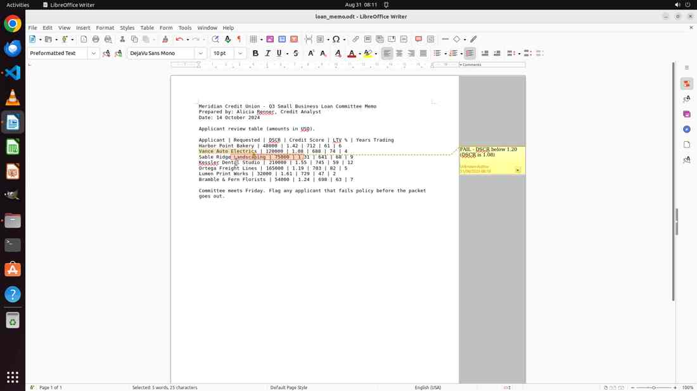
step 23.2 00:11:22
same model call as the previous action
EXECUTED (pyautogui in VM)pyautogui.dragTo(820, 431, duration=0.5)
step 24 00:11:56
THINKINGIt still shows "Selected: 5 words, 25 characters". Hmm, that's the same. Wait, maybe the drag didn't change because the endpoint is being interpreted the same way, or the selection is snapping to word boundaries.
Actually, "5 words, 25 characters" - let me reconsider what's actually selected. Maybe it IS just "Sable Ridge Landscaping" plus a space and something. Wait, 5 words and 25 characters.
Let me count "Sable Ridge Landscaping":
- Sable = 5
- (space) = 1 → 6
- Ridge = 5 → 11
- (space) = 1 → 12
- Landscaping = 11 → 23
So 23 characters, 3 words.
If it's 25 characters and 5 words, then it includes 2 more words and 2 more characters. Like "Sable Ridge Landscaping | 7" — wait that's "|", "7" which are 2 more chars = 25, and words "Sable Ridge Landscaping | 7" = 5 "words" (LibreOffice counts each space-separated token). Yes! So it selected "Sable Ridge Landscaping | 7" = 25 chars, 5 tokens.
Wait but I dragged to x=547 this time, which should be less than 558. But it still shows 25 characters. That's odd. Maybe the drag is snapping or the previous selection is cached.
Hmm, actually maybe the issue is that the drag endpoint isn't being reached because of how the selection works. Or maybe LibreOffice is doing word-level snapping in this "Formatted Text" / preformatted context? No, this is just regular text.
Wait, actually, maybe the problem is that when I do left_click_drag, the actual drag behavior in this environment might just be registering as a click at the endpoint, and then... no, the first drag worked (19 chars for Vance).
Let me reconsider. Actually, both drags gave different-looking highlights but same char count? Let me look at the highlight in the current screenshot. The orange highlight on the Sable Ridge row appears to span from "Sable Ridge" to about "75000 | 1" area, ending around x=555.
Hmm, this is confusing. The character count is 25 in both cases. Maybe the endpoint x doesn't matter much because the selection snaps to... no.
Wait, maybe I'm miscounting. Let me reconsider: maybe "Sable Ridge Landscaping | 75000 | 1" is being selected. Let me count "Sable Ridge Landscaping | 75000 | 1":
- Sable Ridge Landscaping = 23
- " | 75000" = 8 → 31
- " | 1" = 4 → 35
That's 35 chars, not 25.
So 25 chars = "Sable Ridge Landscaping" (23) + 2 chars. The 2 extra chars could be " |" (space + pipe) = "Sable Ridge Landscaping |" = 24 chars, or " 7" etc.
Actually "Sable Ridge Landscaping | " = 23 + 2 (space+pipe) = wait " |" is space+pipe = 2 chars, so 23+2 = 25. And word count: "Sable", "Ridge", "Landscaping", "|" = 4 words. Plus maybe a trailing space. Hmm, "Sable Ridge Landscaping |" is 4 tokens. But it says 5 words.
Alternatively "Sable Ridge Landscaping | 7" = 25 chars: 23 + " | 7" (space, pipe, space, 7 = 4 chars) = 27. No that's 27.
Let me just count "Sable Ridge Landscaping | 7":
S-a-b-l-e = 5
space = 6
R-i-d-g-e = 11
space = 12
L-a-n-d-s-c-a-p-i-n-g = 23
space = 24
| = 25
space = 26
7 = 27
So "Sable Ridge Landscaping | 7" = 27 chars. Not 25.
"Sable Ridge Landscaping |" = 25 chars:
...Landscaping = 23, space = 24, | = 25. Yes = 25 chars. And tokens: Sable, Ridge, Landscaping, | = 4 tokens. But status says 5 words.
Hmm, close enough. Maybe there's a trailing space making it "Sable Ridge Landscaping | " = 26. Or LibreOffice counts differently.
The point is: the selection includes the applicant name "Sable Ridge Landscaping" plus a pipe and maybe a space. This is on the correct row. It's fine for anchoring a comment to this row.
Actually, I'm overthinking this. The selection clearly includes the applicant name and is entirely on the Sable Ridge Landscaping row. That's good enough for "add a comment on each applicant row." Let me just insert the comment now.
Actually, wait. Let me reconsider - I want the comments to be clean and clearly associated with each row. The current selection for Sable Ridge includes "Sable Ridge Landscaping |" which is fine. Let me proceed.
Let me insert the comment with Ctrl+Alt+C.
ACTIONThe selection covers "Sable Ridge Landscaping" on its row, which is fine for anchoring. Let me insert the comment.
EXECUTED (pyautogui in VM)pyautogui.hotkey("ctrl", "alt", "c")
step 25 00:12:09
THINKINGA new comment box appeared for Sable Ridge Landscaping (the second comment box at y≈310-330). The cursor should be in it. Let me type the comment for Sable Ridge Landscaping: "FAIL - Credit score below 660 (score is 641)".
ACTIONA second comment box appeared for Sable Ridge Landscaping. Let me type the comment.
TOOL CALL<tool_call>
<function=computer_use>
<parameter=action>
type
</parameter>
<parameter=text>
FAIL - Credit score below 660 (score is 641)
</parameter>
</function>
</tool_call>
EXECUTED (pyautogui in VM)pyautogui.typewrite("FAIL - Credit score below 660 (score is 641)")
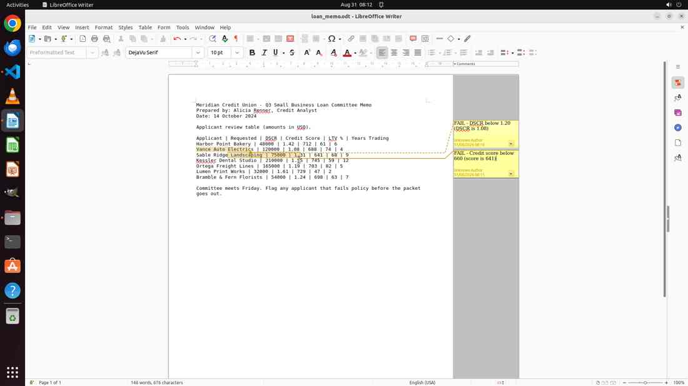
step 26.1 00:12:30
THINKINGThe second comment "FAIL - Credit score below 660 (score is 641)" is now added for Sable Ridge Landscaping.
Now let me move to the third failing row: Ortega Freight Lines (fails DSCR below 1.20 AND LTV above 75%). It's at y≈309. Let me select "Ortega Freight Lines".
"Ortega Freight Lines" = Ortega(6) space Freight(7) space Lines(5) = 6+1+7+1+5 = 20 chars. It starts at x≈425 and ends at around x≈538.
Let me drag from (424, 309) to (538, 309). But given the previous issue where the selection extended a bit, let me aim slightly short of the end. Actually, let me just drag to the end of "Lines". "Lines" ends at around x=535. Let me drag from (424, 309) to (536, 309).
Actually, based on my earlier experience, the drag seems to extend to about the right place. Let me just drag from (424, 309) to (535, 309) and check the char count. "Ortega Freight Lines" = 20 chars.
Let me do the drag.
ACTIONThe second comment is added. Now the third failing row: **Ortega Freight Lines** (fails DSCR below 1.20 and LTV above 75%). Let me select its name.
EXECUTED (pyautogui in VM)pyautogui.moveTo(636, 461)
step 26.2 00:12:33
same model call as the previous action
EXECUTED (pyautogui in VM)pyautogui.dragTo(803, 461, duration=0.5)
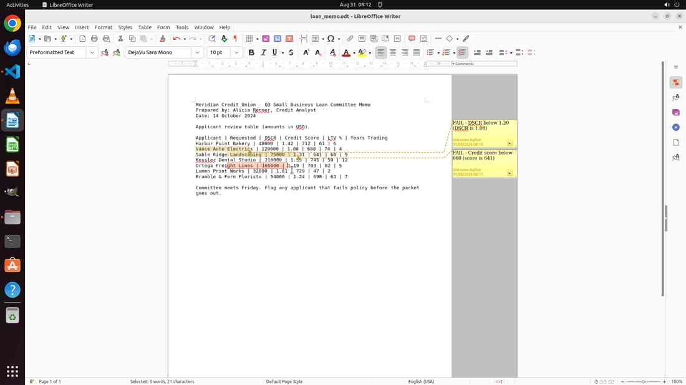
step 27 00:12:45
THINKINGNow "Selected: 5 words, 21 characters". The highlight covers "Ortega Freight Lines | 165000" partially. "Ortega Freight Lines" = 20 chars. 21 chars means it's "Ortega Freight Lines " (with trailing space) or "Ortega Freight Lines |". Either way, it includes the full name "Ortega Freight Lines" on the correct row. Good.
Let me insert the comment for Ortega Freight Lines. It has two violations: DSCR below 1.20 and LTV above 75%. Let me type:
"FAIL - DSCR below 1.20 (1.19); LTV above 75% (82%)"
Let me insert the comment.
ACTION"Ortega Freight Lines" is selected on its row. Let me insert the comment noting both violations.
EXECUTED (pyautogui in VM)pyautogui.hotkey("ctrl", "alt", "c")
step 28 00:12:56
THINKINGA third comment box appeared for Ortega Freight Lines. The cursor should be in it. Let me type the comment with both violations:
"FAIL - DSCR below 1.20 (1.19); LTV above 75% (82%)"
ACTIONA third comment box appeared for Ortega Freight Lines. Let me type the comment with both violations.
THINKINGThe third comment "FAIL - DSCR below 1.20 (1.19); LTV above 75% (82%)" is added for Ortega Freight Lines.
Now let me move to the fourth and final failing row: Lumen Print Works (fails Years trading below 3). It's at y≈319. Let me select "Lumen Print Works".
"Lumen Print Works" = Lumen(5) space Print(5) space Works(5) = 5+1+5+1+5 = 17 chars. It starts at x≈425 and ends at around x≈513.
Let me drag from (424, 319) to (513, 319).
ACTIONThe third comment is added. Now the final failing row: **Lumen Print Works** (fails Years trading below 3). Let me select its name.
EXECUTED (pyautogui in VM)pyautogui.moveTo(636, 477)
step 29.2 00:13:11
same model call as the previous action
EXECUTED (pyautogui in VM)pyautogui.dragTo(768, 477, duration=0.5)
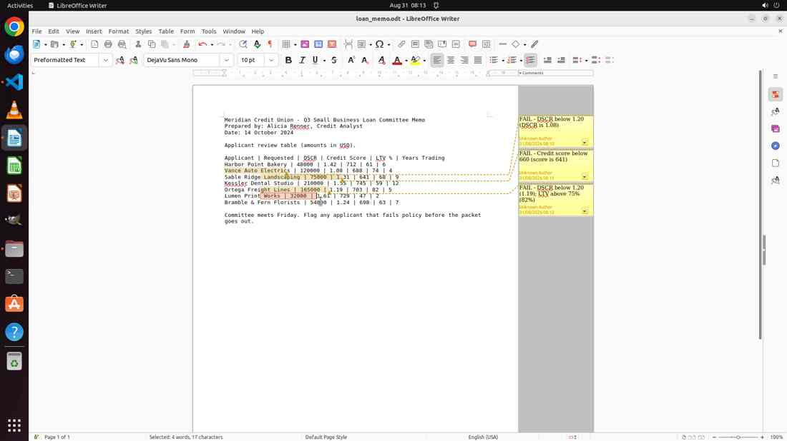
step 30 00:13:29
THINKINGNow "Selected: 4 words, 17 characters". Hmm, 17 characters. "Lumen Print Works" = 17 chars. But it says 4 words. Let me think: "Lumen Print Works" = 3 words. 4 words means there's an extra token, like a trailing pipe or space. But 17 characters = exactly "Lumen Print Works". So maybe the 4th "word" is a trailing space that doesn't count as a character but... no.
Actually, maybe it selected "Lumen Print Works " (with trailing space) = 18 chars. Or "Lumen Print Works|" = 18 chars. Hmm.
Wait, "Lumen Print Works" is exactly 17 characters:
L-u-m-e-n = 5
space = 6
P-r-i-n-t = 11
space = 12
W-o-r-k-s = 17
Yes, exactly 17.
And 4 words? That's odd. "Lumen", "Print", "Works" = 3 words. Unless the selection includes something after like "|" making it a 4th token. But that would add a character making it 18.
Hmm, the highlight in the screenshot covers "Lumen Print Works | 32000" partially - it looks like it extends to around x=512. The orange highlight seems to cover "Lumen Print Works" and maybe a bit of " | 3".
Anyway, the selection clearly includes "Lumen Print Works" on the correct row. Good enough. Let me insert the comment.
Actually, wait, the status says 17 characters which is exactly "Lumen Print Works". So maybe the 4 words is a quirk of counting. Let me not worry about it. The selection includes the name. Let me insert the comment.
Let me type the comment for Lumen Print Works: "FAIL - Years trading below 3 (2 years)"
ACTION"Lumen Print Works" is selected on its row. Let me insert the comment.
EXECUTED (pyautogui in VM)pyautogui.hotkey("ctrl", "alt", "c")
step 31 00:13:37
THINKINGA fourth comment box appeared for Lumen Print Works. The cursor should be in it. Let me type the comment:
"FAIL - Years trading below 3 (2 years)"
ACTIONA fourth comment box appeared for Lumen Print Works. Let me type the comment.
TOOL CALL<tool_call>
<function=computer_use>
<parameter=action>
type
</parameter>
<parameter=text>
FAIL - Years trading below 3 (2 years)
</parameter>
</function>
</tool_call>
EXECUTED (pyautogui in VM)pyautogui.typewrite("FAIL - Years trading below 3 (2 years)")
step 32 00:13:51
THINKINGAll four comments are now added:
1. Vance Auto Electric: "FAIL - DSCR below 1.20 (DSCR is 1.08)"
2. Sable Ridge Landscaping: "FAIL - Credit score below 660 (score is 641)"
3. Ortega Freight Lines: "FAIL - DSCR below 1.20 (1.19); LTV above 75% (82%)"
4. Lumen Print Works: "FAIL - Years trading below 3 (2 years)"
Now I need to click somewhere in the document to deselect/finalize the last comment, then save the document.
Let me click in the document body to deselect. Let me click at an empty area, like (600, 450).
Then I'll save the document with Ctrl+S (which will prompt to keep ODF format).
Then I need to email the verdict list to Dana Kovac at Meridian Credit Union.
Let me first click in the document to deselect.
ACTIONAll four comments are added. Let me click in the document body to finalize the last comment, then save.
EXECUTED (pyautogui in VM)pyautogui.click(899, 674)
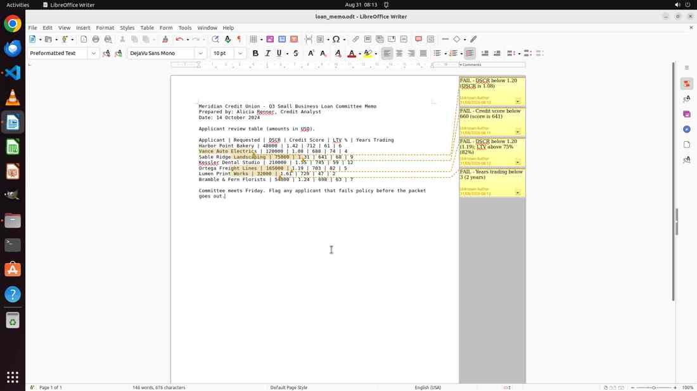
step 33 00:14:03
THINKINGAll four comments are now visible and finalized:
1. "FAIL - DSCR below 1.20 (DSCR is 1.08)" - anchored to Vance Auto Electric
2. "FAIL - Credit score below 660 (score is 641)" - anchored to Sable Ridge Landscaping
3. "FAIL - DSCR below 1.20 (1.19); LTV above 75% (82%)" - anchored to Ortega Freight Lines
4. "FAIL - Years trading below 3 (2 years)" - anchored to Lumen Print Works
Now let me save the document with Ctrl+S. It will likely prompt about keeping ODF format.
ACTIONAll four comments are finalized and visible. Now let me save the document with Ctrl+S.
EXECUTED (pyautogui in VM)pyautogui.hotkey("ctrl", "s")
step 34 00:14:32
THINKINGThe Ctrl+S didn't show a dialog in this screenshot. Usually when saving an .odt file, LibreOffice doesn't prompt for format (it only prompts when saving as a non-ODF format like .docx). Since this is already .odt, it should just save without a dialog. Let me verify by taking another screenshot - actually, the screenshot shows no dialog, so it saved directly (since ODT is the native format).
Wait, but sometimes LibreOffice does show a "Keep Current Format" dialog even for ODT if there were changes... no, it only shows for foreign formats. Since it's ODT, it saved silently.
Let me verify the save worked. Actually, let me not overthink. The document is .odt, so Ctrl+S saves without a format dialog. Good.
Now I need to email the verdict list to Dana Kovac at Meridian Credit Union.
The verdict list:
- Harbor Point Bakery: PASS
- Vance Auto Electric: FAIL - DSCR below 1.20
- Sable Ridge Landscaping: FAIL - Credit score below 660
- Kessler Dental Studio: PASS
- Ortega Freight Lines: FAIL - DSCR below 1.20; LTV above 75%
- Lumen Print Works: FAIL - Years trading below 3
- Bramble & Fern Florists: PASS
Now I need to send an email to Dana Kovac at Meridian Credit Union. I need to find her email address. The task says "email the verdict list to Dana Kovac at Meridian Credit Union." I need to figure out her email address.
Let me think about how to determine her email. It might be something like dana.kovac@meridiancreditunion.com or similar. But I should check if there's contact info available. Maybe there's an email client (like Thunderbird) set up, and she's in the contacts. Or maybe I should compose an email and search for her.
Let me check what email application is available. I see there's a Thunderbird icon in the dock (the blue bird at (23, 89)). Let me open Thunderbird.
Actually, wait. Let me reconsider the whole task. The task has two main parts:
1. Add Writer comments on failing rows (DONE)
2. Email the verdict list to Dana Kovac at Meridian Credit Union
For part 2, I need to:
- Open an email client (Thunderbird)
- Compose a new email
- To: Dana Kovac at Meridian Credit Union (need email address)
- Subject: something like "Verdict list" or "Q3 Small Business Loan Verdicts"
- Body: the verdict list
Let me first check if the document saved. Then open Thunderbird.
Actually, let me verify the save happened. Let me take a screenshot to check if there's a format dialog. The screenshot already shows no dialog, so it saved. But let me double check - actually, the screenshot I have is after Ctrl+S and there's no dialog. Good.
Hmm, wait. Actually I'm slightly concerned. Let me re-examine. When I press Ctrl+S on an ODT file that has unsaved changes, LibreOffice saves it directly without any dialog (since ODT is native). So it's saved. Good.
Now, let me open Thunderbird to compose the email. Let me click on the Thunderbird icon at (23, 89).
Actually, before that, I should figure out Dana Kovac's email address. Let me open Thunderbird and see if there's a contact or if I can find it. The email address format for "Meridian Credit Union" - common would be @meridiancreditunion.com or @meridiancu.com.
Let me open Thunderbird and check the contacts/addresses book. When composing, I can type "Dana" and it might autocomplete if she's a known contact.
Let me open Thunderbird.
ACTIONThe document is saved (ODT is the native format, so it saved without a dialog). Now I need to email the verdict list to Dana Kovac. Let me open Thunderbird to compose the email.
EXECUTED (pyautogui in VM)pyautogui.click(32, 130)
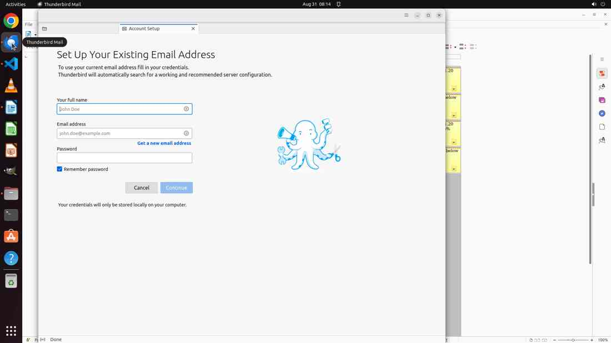
step 35 00:14:52
THINKINGThunderbird opened but it's showing "Set Up Your Existing Email Address" - this means no email account is configured yet. It's asking me to set up an email account. This is a problem - I don't have email account credentials.
Hmm. This is a fresh Thunderbird with no account configured. To send an email, I'd need an account. But I don't have credentials for an email account.
Wait, let me reconsider. Maybe there's a different email approach. Let me think about what tools are available:
1. Thunderbird - no account configured
2. Maybe there's a webmail in Chrome?
3. Maybe there's a "sendmail" or "mail" command line tool?
Let me first cancel this setup dialog and see what Thunderbird looks like without an account. Maybe I can still compose a message, or maybe there's a local sendmail.
Actually, the task is to "email the verdict list to Dana Kovac at Meridian Credit Union." This requires an actual email to be sent. Without an account, I can't send via Thunderbird.
Let me think. Perhaps there's a pre-configured way. Let me cancel this and check. Maybe I should look for:
- A webmail client already logged in (e.g., Gmail in Chrome)
- A local mail setup
Let me cancel the Thunderbird account setup first.
Actually, wait. Let me reconsider. Perhaps the intended approach is to use a webmail service. Let me check Chrome to see if there's an email already open or logged in.
But actually, let me first cancel this dialog and see if Thunderbird has any existing accounts or if I can proceed.
Let me click Cancel.
ACTIONThunderbird is showing an account setup screen, meaning no email account is configured yet. Let me cancel this and investigate the available email options.
EXECUTED (pyautogui in VM)pyautogui.click(443, 588)
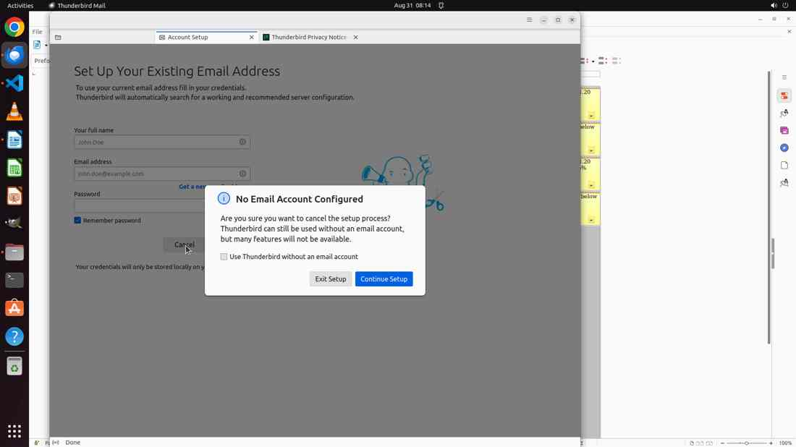
step 36 00:15:23
THINKINGA dialog "No Email Account Configured" appeared. It says "Are you sure you want to cancel the setup process? Thunderbird can still be used without an email account, but many features will not be available."
There's a checkbox "Use Thunderbird without an email account" and buttons "Exit Setup" and "Continue Setup".
Since there's no email account, I can't send an email through Thunderbird directly. I need to use a different method.
Let me think about the options:
1. Use a webmail service via Chrome (if one is available/logged in)
2. Use a command-line mail tool (sendmail, mail, msmtp)
Let me first exit this setup to see if there's any way. Actually, let me reconsider - maybe I should check Chrome to see if there's a webmail already open.
Actually, let me think about this differently. The task expects me to send an email. In these OSWorld-type environments, there's usually a mail client pre-configured or a webmail. Let me check what's available.
Let me first exit the setup. Let me check the "Use Thunderbird without an email account" checkbox and click Exit Setup. Actually, I don't want to use Thunderbird without an account because I can't send mail that way.
Let me instead close Thunderbird and check Chrome for webmail, or check for a command-line mail setup.
Actually, let me reconsider. Perhaps the email is meant to be sent via a local mail system (like a mock SMTP server). Let me check the command line.
Let me exit setup first. Let me click "Exit Setup" - but I might want to use the checkbox. Actually, let me just click "Exit Setup" to get to the main Thunderbird window (or it might just close).
Hmm, actually if I exit setup without an account, Thunderbird might not have a usable main window for sending.
Let me step back and think about the most likely intended solution. Given the environment (OSWorld), there's likely:
- A webmail interface in Chrome that's already logged in (like a Gmail or a local mail server web UI)
- OR a pre-configured mail client
Since Thunderbird has no account, the intended method is probably webmail in Chrome. Let me check Chrome.
But wait, maybe I'm wrong and there IS a way. Let me check the command line for mail tools. Let me open a terminal.
Actually, let me reconsider the whole approach. Let me:
1. First exit/close this Thunderbird setup.
2. Check Chrome for any webmail.
3. Check for command-line mail tools.
Let me click "Exit Setup". Actually, checking the checkbox "Use Thunderbird without an email account" then it will let me into the main window. But I can't send without an account.
Let me just close Thunderbird entirely and investigate other options. Let me click "Exit Setup".
Hmm, actually, let me reconsider. Let me not click Exit Setup yet. Let me think.
Actually the cleanest: close Thunderbird and look for how to send email. Let me check if there's a webmail by opening Chrome. But I also want to know Dana Kovac's email address.
Wait - actually, maybe I should reconsider whether Thunderbird is the right tool. Let me check if there's a mail command available via terminal, which could send to a local SMTP. In OSWorld tasks involving email, sometimes there's a setup where `mail` or a local server handles it.
Let me close this and check the terminal. Let me click "Exit Setup".
Actually, you know what, let me reconsider. The typical OSWorld email task uses a webmail interface (a custom one hosted locally, often at a URL like http://localhost:xxxx or a Gmail-like interface). Let me check Chrome first since that's most likely.
Let me exit Thunderbird setup. I'll click "Exit Setup".
Wait, but if I exit setup, Thunderbird main window appears with no accounts. That's fine, I'll just close it. Let me click Exit Setup.
Actually, let me reconsider - I'll just close the whole Thunderbird window and open Chrome to look for webmail. Let me click Exit Setup first to get past this dialog.
ACTIONThis is a fresh Thunderbird with no account. Let me exit the setup and investigate other email options (like a webmail in Chrome or a command-line mail tool).
EXECUTED (pyautogui in VM)pyautogui.click(795, 671)
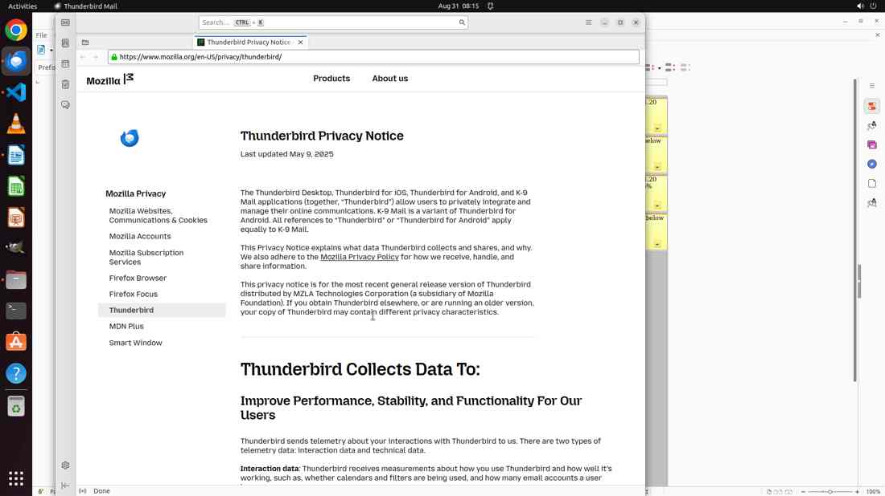
step 37 00:15:40
THINKINGNow Thunderbird is open with a "Thunderbird Privacy Notice" tab but no email account configured. There's no mail account, so I can't send emails through Thunderbird directly.
Let me close Thunderbird and investigate other options. Let me think about what's the best approach:
1. Webmail in Chrome - most likely in OSWorld environments
2. Command-line mail tool
Let me close Thunderbird and open Chrome to check for webmail. Actually, let me keep Thunderbird open but check Chrome.
Actually, let me close this Thunderbird window first to reduce clutter. Let me click the X at top right of the Thunderbird window (919, 32).
Wait, but I might need Thunderbird later. Let me just switch to Chrome. But first, let me reconsider.
Actually, the most reliable way to determine what email tools are available is to check the terminal. Let me open a terminal and check for:
- sendmail
- mail/mailx
- msmtp
- Any local mail configuration
But actually, in OSWorld, the email is typically sent via a web interface. Let me check Chrome first since it's the most likely.
Let me close Thunderbird and open Chrome. Actually, let me not close Thunderbird - I'll just open Chrome. Let me click on the Chrome icon.
Hmm, but I realize I should think about whether sending email is even the mechanism, or whether I need to figure out Dana's email address first.
Let me open Chrome and see what's there. Let me click the Chrome icon at (23, 43).
Actually, wait. Let me reconsider. Let me close the Thunderbird privacy notice tab and see if there's a way. No, without an account there's no way in Thunderbird.
Let me open Chrome to look for webmail.
ACTIONThunderbird has no account configured, so I can't send through it directly. Let me check Chrome for a webmail interface. Let me open Chrome.
THINKINGChrome opened with a new tab showing Google. There's a "Gmail" link in the top right. This suggests there might be a Gmail/webmail account. But it's a generic new tab page. Let me check if there's a logged-in Gmail. Let me click on "Gmail" in the top right.
Actually, the "Gmail" and "Images" links are just Google search shortcuts, not necessarily a logged-in account. But let me check. Let me click "Gmail".
Actually, wait. In OSWorld, the email is usually a local webmail. But here it's Chrome with Google. Let me check if Gmail is logged in. Let me navigate to gmail.com.
Hmm, but there might not be internet or a real Gmail account. Let me think.
Actually, let me reconsider. The task environment might have a specific webmail. But given Chrome shows a Google homepage with Gmail shortcut, maybe there IS a Gmail account configured. Let me click on Gmail to check.
Let me click "Gmail" at (1178, 97).
ACTIONChrome opened with a Google page showing a Gmail shortcut. Let me check if there's a logged-in email account by clicking Gmail.
EXECUTED (pyautogui in VM)pyautogui.click(1766, 144)
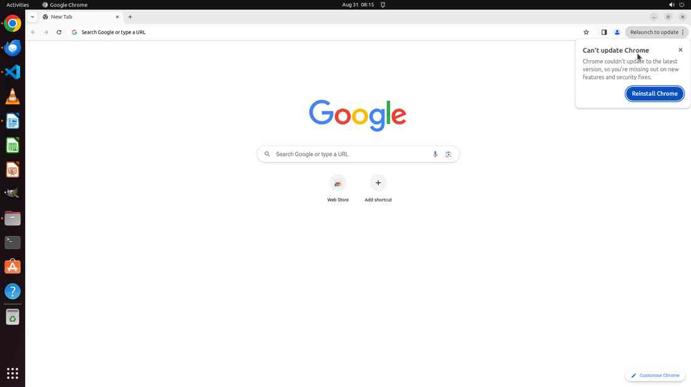
step 39 00:16:05
THINKINGI clicked and it seems I hit a "Reinstall Chrome" button area / a "Can't update Chrome" popup appeared. The Gmail link wasn't there anymore because the page state changed. Let me dismiss this popup by clicking the X at (1260, 92).
Let me close this "Can't update Chrome" notification.
ACTIONA "Can't update Chrome" popup appeared. Let me dismiss it.